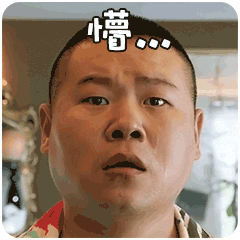

2020-05¶
2020-05-05¶
2020-05-05 10:10:52 |
我 |
因為心理學所謂的「潛意識」，有時候是指，表面意識之中的一些已經把你制約住的程式；你已經忘掉它的存在了，它卻支配著你──那叫潛意識。 |
2020-05-06¶
2020-05-06 08:27:02 |
我 |
天津110指挥中心系统升级改造项目和易华录合作，包括8s、8a和RTSync等产品 |
2020-05-06 08:27:15 |
我 |
这个项目你知道吗 |
2020-05-06 08:30:32 |
你 |
不知道呢[坏笑] |
2020-05-06 08:30:35 |
你 |
哈哈 |
2020-05-06 08:31:02 |
我 |
昨天我们开会，销售说的 |
2020-05-06 08:31:07 |
你 |
我刚到公司了 |
2020-05-06 08:31:19 |
我 |
嗯嗯 |
2020-05-06 08:31:41 |
你 |
我最近在看你推荐的那本书 |
2020-05-06 08:31:53 |
我 |
感觉怎么样 |
2020-05-06 08:32:42 |
你 |
很不错 |
2020-05-06 08:33:00 |
你 |
有点像博弈论，也是看待世界的一种眼光 |
2020-05-06 08:33:33 |
我 |
是 |
2020-05-06 08:35:37 |
你 |
我提前跟你说下，我跟李辉的悟道误会解除了 |
2020-05-06 08:35:40 |
你 |
[奸笑] |
2020-05-06 08:36:15 |
你 |
在5月2号的时候，我俩成功的沟通清楚了 |
2020-05-06 08:37:40 |
我 |
太好了，有空和我说说呗 |
2020-05-06 08:38:17 |
你 |
这真的是一个振奋人心的消息 |
2020-05-06 08:38:41 |
我 |
是呀是呀 |
2020-05-06 08:46:16 |
你 |
这个故事得李辉给你面对面的讲 |
2020-05-06 08:46:21 |
你 |
[呲牙] |
2020-05-06 08:46:29 |
你 |
她自己说挺颠覆的 |
2020-05-06 08:46:32 |
我 |
哦，好吧 |
2020-05-06 08:47:12 |
你 |
打字太说不清了 |
2020-05-06 08:47:13 |
我 |
😄 |
2020-05-06 08:47:15 |
你 |
我有预感，我们快要约一次面聊了 |
2020-05-06 08:47:24 |
你 |
那天我俩聊到了快2点 |
2020-05-06 08:47:33 |
我 |
哈哈，好期待呀 |
2020-05-06 08:48:40 |
你 |
是啊。我太高兴了，高兴的我晚上都睡不着 |
2020-05-06 08:48:41 |
我 |
真的呀 |
2020-05-06 08:49:19 |
你 |
真的。李辉开始会用我的思维思考问题了 |
2020-05-06 08:51:16 |
你 |
我俩聊的时候一直在说如果王老师在就好了 |
2020-05-06 08:51:56 |
我 |
[动画表情] |
2020-05-06 08:53:08 |
你 |
一会李辉到公司就得跟你说 |
2020-05-06 09:01:37 |
我 |
好 |
2020-05-06 12:27:02 |
我 |
@纯银V：去年在犬校说过一句话，产品经理的认知进阶有五个等级。 第一个等级是产品体验，对应 1-3 年 PM。 第二个等级是产品架构，对应 3-5 年 PM，怎样将核心模块搭建为产品框架，在这个过程中做到适配性好（适配产品场景与价值），扩展性强，简洁优雅强大，对于未来的迭代进行准确的预判。 第三个等级是产品价值，对应 5-10 年 PM，也就是上一条微博讲的，产品为一整个用户群体创造的，让他们离不开你的价值。 第四个等级是市场逻辑，你对垂直市场运行规律的深刻理解。 第五个等级是隐藏关，前面四级如果都过了，产品做到了千万级的日活，这时怎样应对高复杂度的场景与需求，对产品价值与市场演变进行预判。 我自己只做到了第四级，产品没成功，没机会挑战第五级。 但这里有一件坑爹的事情，即便你做到了第五级，换一个赛道从头来过，因为垂直市场发生了变化，你可能在第四级就仆街了。理解垂直市场的运行规律，这不仅仅是一个能力强弱的问题，能力再强也没可能一年就理解到陌生市场的运行规律，但理解不深刻一定会仆街。 所以我们这个行业啊，能跨两个垂直市场，连战连胜的 PM，恐怕是个位数。找到市场机遇好，自己既理解又擅长的垂直市场，那就是命啊，是命啊，说起来都是眼泪啊。 |
2020-05-06 12:28:35 |
你 |
哈哈 |
2020-05-06 15:42:15 |
我 |
李辉说你讲的啥她都忘了[捂脸] |
2020-05-06 15:42:27 |
我 |
你和我说说都和她讲了啥吧 |
2020-05-06 15:42:33 |
你 |
[奸笑] |
2020-05-06 15:42:36 |
你 |
哈哈 |
2020-05-06 15:44:05 |
你 |
其实最主要的就1条：不是山外有山，人外有人 |
2020-05-06 15:44:51 |
你 |
因为你带的李辉，李辉在这点上的认知跟你一模一样，并且根深蒂固。我是从她悟的道生一开始说的 |
2020-05-06 15:45:55 |
你 |
鹰飞不低，鸡飞不高就是一，是道作用在鹰身上和鸡身上的表现。 |
2020-05-06 15:47:21 |
我 |
是呀 |
2020-05-06 15:47:29 |
你 |
从这个道理推广就知道了佛家第三境界：看山只是山，看水只是水就是要看到道作用在“山”、“水”的那个道。 |
2020-05-06 15:47:45 |
你 |
也就是道生一 |
2020-05-06 15:48:07 |
你 |
就是这些，这些我都跟你说过，没啥跟她说的没跟你说过的 |
2020-05-06 15:48:21 |
我 |
是的 |
2020-05-06 15:48:37 |
你 |
就有一个点我没敢跟你说 |
2020-05-06 15:48:41 |
你 |
我跟你说说 |
2020-05-06 15:48:52 |
你 |
就是关于子女 |
2020-05-06 15:51:13 |
你 |
这一两句话都说不清楚 |
2020-05-06 15:51:15 |
你 |
妈妈呀 |
2020-05-06 15:51:25 |
我 |
不着急，慢慢说 |
2020-05-06 15:52:55 |
你 |
咋说呢 |
2020-05-06 15:58:46 |
你 |
这么说吧，悟道悟的不是各种事物背后的规律，是终极大道，其实就是道，按照道德经里说的，不存在什么道和终极大道，道就是道，顶多叫成大道，但没有什么道和终极大道之分。悟道不是一直悟各种道，是知道道是什么，但要保持时时入道，需要不断修炼自己，不断悟。说白了，道就是一层窗户纸，捅破之后就是练了。但是这层窗户纸分层次，大致就是佛家三境界，每层都有窗户纸。 |
2020-05-06 16:00:49 |
你 |
我跟李辉说就是：你入了窄门，神告诉你你自己就是神，但是你不信 |
2020-05-06 16:01:30 |
你 |
这个我也跟你说过 |
2020-05-06 16:01:53 |
我 |
嗯嗯 |
2020-05-06 16:02:37 |
你 |
到了接近道的层面，有任何心思都会从这条窄缝向外推演出来很多事情，这些事情就是你想不明白，判断不符合道的地方 |
2020-05-06 16:02:44 |
你 |
比如你对子女的放不下 |
2020-05-06 16:05:53 |
你 |
所以悟道这件事有两个路径：1、知道道是什么，但无法做到时时入道，需要修炼 2、一直在悟道，相信人外有人、天外有天。 |
2020-05-06 16:10:56 |
你 |
你所有想不明白的问题的原因就这一条，神告诉你自己就是神，你不相信 |
2020-05-06 16:11:26 |
我 |
前面这些我都同意，最后这句我还是不能同意 |
2020-05-06 16:11:33 |
你 |
哈哈哈哈 |
2020-05-06 16:11:45 |
我 |
不是我不相信 |
2020-05-06 16:11:56 |
你 |

|
2020-05-06 16:12:07 |
我 |
「 李杰: 你所有想不明白的问题的原因就这一条，神告诉你自己就是神，你不相信 」 - - - - - - - - - - - - - - - 这句 |
2020-05-06 16:12:20 |
你 |
好的 |
2020-05-06 16:13:08 |
我 |
= |
2020-05-06 16:13:26 |
你 |
也是因为这个，你不知道道是什么？虽然你可以已经无数次悟到并且依道行事了。 |
2020-05-06 16:13:43 |
你 |
也是那天我跟你说了，你走太过了，得回来点 |
2020-05-06 16:13:48 |
你 |
矫枉过正了 |
2020-05-06 16:28:17 |
我 |
你说的这些我都知道 |
2020-05-06 16:30:34 |
我 |
我的理解是这样的，我按照我理解的道行事，可是总是会发现有一些偏离的地方，每次偏离以后我就可以悟出新的东西，那么原来的没有悟出新的东西的道是不是终极大道呢？我自己是持怀疑的态度的 |
2020-05-06 16:35:43 |
你 |
嗯嗯。所以我说让你好好读读道德经。道德经讲的跟你这种悟道方式非常不一样。 |
2020-05-06 16:36:07 |
你 |
你这种方式还是盲人摸象 |
2020-05-06 16:36:15 |
我 |
嗯嗯 |
2020-05-06 16:36:21 |
你 |
不是上帝视角，all in control |
2020-05-06 16:36:37 |
你 |
你这是总结归纳法，哈哈 |
2020-05-06 16:42:53 |
你 |
道就是无，一就是有，二是有正就有反，道是”言语道断，一说就破“，文字、语言和意识三者一体。能说出来，能写出来，能想到都不是道，顶多是一。 |
2020-05-06 16:43:53 |
我 |
嗯嗯 |
2020-05-06 16:46:43 |
你 |
佛家的第三种境界跟王阳明说的”格物致知“也是一个意思 |
2020-05-06 16:46:54 |
你 |
都是道德经里面的道生一的一 |
2020-05-06 16:50:20 |
我 |
是的 |
2020-05-07¶
2020-05-07 08:57:56 |
我 |
“道家是這樣的一門科學，而這門科學的用途，如果用《莊子》的語言的話，是希望我們能夠找到內心深處的「天」，就是老天爺，大宇宙，宇宙的意識──好像這個大宇宙有一個總體的意識存在，而那個意識，說不定在別的人口中，被叫作上帝──有這麼一門科學，教你如何去探尋上帝。” 摘录来自: JT叔叔. “庄子基本功。” Apple Books. |
2020-05-07 09:00:31 |
你 |
说的挺玄的。我觉得还是道德经说的实在。 |
2020-05-07 09:00:32 |
你 |
嘿嘿 |
2020-05-07 09:01:00 |
我 |
哈哈，以后你会懂的 |
2020-05-07 09:12:47 |
我 |
这周日你们有空吗 |
2020-05-07 09:13:10 |
你 |
这种就休息一天是吧 |
2020-05-07 09:13:22 |
我 |
哦，对 |
2020-05-07 09:14:12 |
你 |
一天可能没啥时间 |
2020-05-07 09:14:19 |
你 |
咱们再商量商量 |
2020-05-07 09:14:21 |
我 |
是，有点紧张 |
2020-05-07 09:14:24 |
你 |
也不一定 |
2020-05-07 09:14:45 |
我 |
可惜你上班和我们不在一起，要不中午就可以一起聊了 |
2020-05-07 09:14:55 |
你 |
是呀 |
2020-05-07 09:15:02 |
你 |
太远了 |
2020-05-07 09:15:12 |
你 |
我跟李辉商量等以后可以说出去逛街 |
2020-05-07 09:15:18 |
你 |
只能周末聚聚 |
2020-05-07 09:15:22 |
我 |
嗯嗯 |
2020-05-08¶
2020-05-08 08:29:29 |
我 |
到了吗 |
2020-05-08 08:39:00 |
你 |
刚到 |
2020-05-08 08:39:17 |
我 |
今天堵车了吧 |
2020-05-08 08:39:56 |
你 |
有点，不赶快开 |
2020-05-08 10:17:15 |
我 |
情商高呢，主要是让别人高兴； 智商高呢，主要是让自己高兴； 智商不高情商也不高呢，主要就是自己不高兴了还要不让别人高兴。[偷笑] |
2020-05-09¶
2020-05-09 08:50:39 |
你 |
王老师到公司了吧 |
2020-05-09 08:50:42 |
你 |
我刚到公司 |
2020-05-09 08:50:45 |
你 |
今天事情比较多 |
2020-05-09 09:06:50 |
我 |
哦哦，你最近好忙呀 |
2020-05-09 09:07:16 |
你 |
有点忙 |
2020-05-09 09:07:37 |
我 |
你先忙吧 |
2020-05-11¶
2020-05-11 09:32:03 |
我 |
@纯银V：昨天和朋友聊到，虽然这么说反直觉——但在管理上驱动思维或者行动惰性的老员工，尤其是习惯性惰性的大厂老员工，辱骂真的是一个很有效的办法。 昨天听到一些习惯性惰性的表现，作为外人，我一边听一边不停地辱骂： 傻逼。 这也太傻逼了吧。 怎么能这么蠢。 然而这不是一两个人的问题，是一群人的问题。你能怎么办呢？大换血？换血就能阻止大厂老员工的退化性惰性吗？太天真了。再说大厂业务盘根错节，这群人可能是不太行，但也只有他们最了解这种盘根错节。 “退化性惰性” 其实是大厂很普遍的问题，也就是老油条化。得过且过，不动脑子，只有上升期的新锐大厂才能避开，平台期大厂几乎无一幸免。常规的驱动方法是绩效奖金，但其实也不是很有效。那什么最有效呢？ 辱骂…… 真的…… 辱骂最有效。我们假定老板骂得对，骂得有道理，触及人格的辱骂能够很有力地驱动中层积极起来，小跑两步。 是的，这里单讲中层，不包括基层。中层其实是大厂退化性惰性最严重的一群人，高层拉得下脸激情辱骂中层，是缓解这种惰性很有力的驱动。 人真的很难在同一家公司，相似的岗位上连续工作5年以上，还能保持热情，不进入退化性惰性的泥沼，真的太难了。毕竟金字塔的上层空间有限，当三十多岁老员工明白怎么努力也挤不上去的时候，驱动你跑起来的是高度的责任感，旺盛的好奇心，还是来自上司劈头盖脸的辱骂呢？ |
2020-05-11 09:32:11 |
我 |
[呲牙] |
2020-05-11 12:28:24 |
我 |
忙吗 |
2020-05-11 12:31:50 |
你 |
我在吃饭 |
2020-05-11 12:32:19 |
我 |
你先吃吧，不急 |
2020-05-11 13:06:56 |
你 |
我吃完回来了 |
2020-05-11 13:07:12 |
你 |
我们吃饭要开车去，我先趴一会，晚点再聊 |
2020-05-11 13:07:18 |
我 |
好的 |
2020-05-12¶
2020-05-12 08:53:48 |
你 |
最近一直忙着写方案了 |
2020-05-12 08:54:03 |
你 |
昨天写了一天，写区块链和数据银行的 |
2020-05-12 08:54:16 |
你 |
今天还要写Q2任务书，下班前就交 |
2020-05-12 08:54:21 |
你 |
[捂脸] |
2020-05-12 08:54:32 |
我 |
嗯嗯，你忙吧 |
2020-05-12 08:54:49 |
你 |
王老师最近忙吗 |
2020-05-12 08:56:00 |
我 |
还行，不是太忙 |
2020-05-12 11:06:36 |
我 |
对付小人有四个不同层次的对策： 下策是：怒而不能除之； 中策是：怒而除之； 上策是：不动声色妙除之； 上上策是：将心比心善用之。 |
2020-05-12 11:08:06 |
你 |
哈哈 |
2020-05-12 11:08:53 |
我 |
老丁对 zy 就是上上策 |
2020-05-12 11:55:39 |
你 |
刚才我们部门副总跟我说了一大堆部门的情况，重点是部门总经理跟他的过节 |
2020-05-12 11:55:54 |
我 |
啊，连这个都说呀 |
2020-05-12 11:56:04 |
你 |
我也挺意外的 |
2020-05-12 11:56:13 |
你 |
为啥跟我一个入职这么短时间的人说这些 |
2020-05-12 11:56:22 |
你 |
推心置腹的 |
2020-05-12 11:56:26 |
我 |
哦哦 |
2020-05-12 11:56:28 |
你 |
我问了他这个问题 |
2020-05-12 11:56:42 |
你 |
他回答是他觉得我是个直肠子 |
2020-05-12 11:58:11 |
你 |
是以圣人常善救人，故无弃人；常善救物，故无弃物，是谓袭明 |
2020-05-12 11:58:40 |
我 |
那你觉得他是个直肠子吗 |
2020-05-12 11:59:48 |
你 |
首先他的态度很真诚 其次就我现在观察他有判断失误的情况 |
2020-05-12 12:00:38 |
你 |
他是个做事的人 |
2020-05-12 12:01:10 |
你 |
自古副职就难当 |
2020-05-12 12:04:08 |
我 |
是 |
2020-05-12 18:40:08 |
我 |
我在开会 |
2020-05-13¶
2020-05-13 08:50:51 |
你 |
王老师 |
2020-05-13 08:50:54 |
你 |
早呀 |
2020-05-13 08:51:08 |
我 |
早 |
2020-05-13 08:55:15 |
你 |
对人的认识也遵循佛家三境界，表现出来就是：最开始会给人第一印象，比如好相处不好相处，热情冷漠，博学无知，软弱强硬等等，但是接触久了人就变得多面了进入第二种状态——复杂，看不清，弄不懂，有时候坚强有时候软弱，有时候热情，有时候冷漠，但是不管多复杂，人也有不变的部分，最终就是这个人的模型，热情、冷漠、软弱还是坚强 |
2020-05-13 08:56:15 |
你 |
昨天副总的话影响了我对总经理的模型，以至于昨天下午交流讲ppt的时候有点紧张了[偷笑] |
2020-05-13 08:56:19 |
你 |
我还是修炼不够 |
2020-05-13 08:56:53 |
你 |
首先不可能一眼洞穿真相，其次连人都是复杂的，有正就有反还练的不熟 |
2020-05-13 08:57:28 |
你 |
今天我想了一个事情 |
2020-05-13 08:58:00 |
你 |
在这个公司我想实现什么，我是不是乐的 |
2020-05-13 08:58:16 |
我 |
说说 |
2020-05-13 08:58:28 |
你 |
我9点要开会，中午吧 |
2020-05-13 08:58:32 |
我 |
好 |
2020-05-13 13:14:29 |
你 |
提前醒了15分钟，跟王老师聊一会 |
2020-05-13 13:16:56 |
你 |
因为了解了局面的复杂，为了让自己守住初心，我想只能把自己的注意力关注在自己想实现的目标上，其他别的都是浮云 |
2020-05-13 13:20:52 |
你 |
[偷笑] |
2020-05-13 13:22:04 |
你 |
红尘炼心就是这个意思了 |
2020-05-13 13:25:48 |
我 |
嗯嗯 |
2020-05-13 13:26:02 |
我 |
你好忙呀 |
2020-05-13 13:26:14 |
你 |
是。最近事情比较多 |
2020-05-13 13:26:28 |
你 |
还有，我想明白了那次跟您说的问题 |
2020-05-13 13:26:37 |
你 |
官员、百姓 |
2020-05-13 13:27:32 |
我 |
哈哈，那这得忙到什么时候 |
2020-05-13 13:30:13 |
你 |
最终的结论是：国家和人民之间就是一种契约关系，国家保障人民安居乐业，人民向国家纳税。当国家有钱了，就需要给人民提供更好的服务，就需要做很多基础建设，取之于民，用之于民。国家的行政是通过官僚体系实现的，领导人有战略，官僚体系负责执行，执行的情况不一。 |
2020-05-13 13:35:50 |
我 |
哈哈，写的挺好 |
2020-05-13 13:36:34 |
我 |
你先忙吧，等有空得和你好好聊聊了，好久都没有聊了 |
2020-05-13 13:40:45 |
你 |
嗯。 |
2020-05-13 13:40:52 |
你 |
今晚上我可以给你打电话 |
2020-05-13 13:41:13 |
我 |
大概几点，我先安排一下[呲牙] |
2020-05-13 13:41:38 |
你 |
哈哈。你看你也很忙是不 |
2020-05-13 13:41:47 |
你 |
大概6点半到7点之间 |
2020-05-13 13:41:53 |
你 |
我下班回家开车可以打 |
2020-05-13 13:41:55 |
我 |
好的 |
2020-05-13 19:01:25 |
你 |
我要等一会 |
2020-05-13 19:02:38 |
我 |
不急 |
2020-05-14¶
2020-05-14 07:07:29 |
我 |
@纯银V：什么是官僚主义？前几天想到一个角度的解释，当大多数人把免责和甩锅作为第一优先级，做事失去了灵活性，这就是官僚主义。官僚主义是组织的癌症，古今中外无药可治，通常在最开始建立组织时，依靠强烈的理想主义可以缓解一时，但理想主义的退潮是不可避免的。随着各级领袖的老去，理想主义也渐渐锈蚀，官僚们像癌细胞爬满全身。国家如此，公司亦如此。 |
2020-05-14 07:07:40 |
我 |
我到公司了[呲牙] |
2020-05-14 07:10:01 |
你 |
这么早 |
2020-05-14 07:11:38 |
我 |
是，今天早一点 |
2020-05-14 08:49:27 |
你 |
我到公司拉 |
2020-05-14 08:49:53 |
我 |
嗯嗯，是堵车了吗 |
2020-05-14 08:50:31 |
你 |
没有，出来晚了会 |
2020-05-14 08:50:38 |
我 |
嗯嗯 |
2020-05-14 08:50:44 |
你 |
到地上来，开电脑 |
2020-05-14 08:50:55 |
你 |
你们开始干活了吗 |
2020-05-14 08:52:00 |
我 |
我开晨会呢 |
2020-05-14 08:52:19 |
我 |
没事，他们说，我就听着 |
2020-05-14 08:52:55 |
你 |
嗯。我也没啥要说的 |
2020-05-14 08:53:30 |
你 |
我写日报了先 |
2020-05-14 08:53:38 |
你 |
等有体会再聊 |
2020-05-14 08:56:11 |
我 |
嗯嗯 |
2020-05-14 12:34:51 |
我 |
昨天你讲到的官僚，这里面还有一个点，就是对社会秩序的考量。官僚系统本身就是为了维护秩序的，其 KPI 也是以秩序为考量的。所以官僚系统是很难容忍创新，特别是颠覆性创新，因为这是对系统的颠覆 |
2020-05-14 12:36:13 |
我 |
所以当一个系统开始官僚化以后，就意味着这个系统开始固化并且开始腐败。想避免出现这种情况就是变革，从内到外的变革是改革，从外到内的变革是革命 |
2020-05-14 12:59:44 |
你 |
嗯嗯。因为世界的本质是熵增的，秩序是有限的规则，势必会出现破坏秩序的情况。而秩序的存在是因为阶级，只要有阶级，就会有秩序，有秩序就会存在新的变量需要打破秩序，局面就一定会改变，只是时间的问题。 |
2020-05-14 13:00:47 |
我 |
是的，所以选择也就比较清楚了，就是是否服从秩序 |
2020-05-14 13:17:25 |
我 |
对了，有空你把你写的那个区块链的给我看看吧 |
2020-05-14 13:30:17 |
你 |
0512 区块链+数据银行联合解决方案.pptx |
2020-05-14 13:30:26 |
你 |
里面没涉及区块链技术 |
2020-05-14 13:30:34 |
你 |
就是介绍了一种可能的产品方案 |
2020-05-14 13:35:54 |
我 |
嗯嗯，我先看看，我就是想看区块链的应用场景 |
2020-05-14 13:36:10 |
你 |
我给你发一下区块链公司发过来的 |
2020-05-14 13:36:26 |
你 |
布比区块链及应用案例简介-2020.02.26-2.pptx |
2020-05-14 13:36:27 |
你 |
这是两家 |
2020-05-14 13:36:28 |
你 |
荷月科技公司介绍3.pdf |
2020-05-14 13:36:35 |
我 |
好的 |
2020-05-15¶
2020-05-15 23:33:42 |
你 |
2020-05-18¶
2020-05-18 08:31:36 |
我 |
到公司了吗 |
2020-05-18 08:37:04 |
你 |
我昨天出差了 |
2020-05-18 08:37:15 |
你 |
今天在江苏泰州姜堰区 |
2020-05-18 08:37:20 |
你 |
一会去项目公司 |
2020-05-18 08:37:30 |
我 |
哦哦 |
2020-05-18 08:39:10 |
你 |
我们过来学习了 |
2020-05-18 08:39:23 |
你 |
我争取3天回去 |
2020-05-18 08:39:27 |
我 |
挺好的，学习啥呀 |
2020-05-18 08:40:59 |
你 |
竞品的产品 |
2020-05-18 08:41:07 |
你 |
等会 |
2020-05-19¶
2020-05-19 08:19:50 |
你 |
|
2020-05-19 08:20:43 |
我 |
早呀 |
2020-05-19 08:21:01 |
你 |
早 |
2020-05-19 08:21:17 |
你 |
一大早起看这个看的热血沸腾 |
2020-05-19 08:21:27 |
我 |
哈哈 |
2020-05-19 08:21:38 |
我 |
你这几天忙吗 |
2020-05-19 08:33:01 |
你 |
还行，昨天不太适应出差的情况，今天应该会好一点 |
2020-05-19 08:33:46 |
我 |
哦哦，可要注意身体 |
2020-05-20¶
2020-05-20 12:52:40 |
我 |
@北京楼少：高瓴资本张磊的一段话：人生很重要的一件事是，找一帮你喜欢的、真正靠谱的人，一起做有意思的事。珍惜你身边的人，因为你不知道什么时候会说再见。在人生的道路上，选择与谁同行，比要去的远方更重要。 |
2020-05-21¶
2020-05-21 08:31:34 |
我 |
你回来了吗 |
2020-05-21 08:42:47 |
你 |
没有 |
2020-05-21 08:43:03 |
我 |
啊，这么长时间了 |
2020-05-21 08:43:07 |
我 |
有回来的计划吗 |
2020-05-21 08:43:17 |
你 |
这周可能都有点费劲 |
2020-05-21 16:21:55 |
你 |
[足球] |
2020-05-21 16:22:33 |
我 |
哈哈，你没事了？ |
2020-05-21 16:22:41 |
你 |
没啥大事了 |
2020-05-21 16:22:46 |
你 |
需求写完了 |
2020-05-21 16:22:56 |
你 |
竞品学习到一定深度了 |
2020-05-21 16:22:59 |
你 |
不想干活了 |
2020-05-21 16:23:00 |
你 |
嘻嘻 |
2020-05-21 16:23:04 |
你 |

|
2020-05-21 16:23:10 |
我 |
哈哈，歇会吧 |
2020-05-21 16:23:22 |
我 |
学到什么新东西了吗 |
2020-05-21 16:23:46 |
你 |
就是学习学习，了解了解业务 |
2020-05-21 16:24:01 |
你 |
感受感受易华录的水平 |
2020-05-21 16:24:27 |
我 |
有什么感受吗 |
2020-05-21 16:24:36 |
你 |
不知道最终以什么东西作为交付物 |
2020-05-21 16:25:10 |
你 |
我有种感受就是我学东西挺快的 |
2020-05-21 16:25:23 |
你 |
从外向内看产品，我也没有多懵圈 |
2020-05-21 16:25:38 |
你 |
有时候不知道某个功能为啥的时候，突然就有了想法，想明白了 |
2020-05-21 16:26:01 |
我 |
哈哈👍 |
2020-05-21 16:26:26 |
你 |
实际项目过程事情挺多的，非可控的因素太多，责任心强的人又很少 |
2020-05-21 16:27:49 |
我 |
哦哦 |
2020-05-21 16:28:01 |
你 |
现在我们这个项目就挺失控的。另外，我们这次是跟副总出来学习的，我感觉跟李总好久没汇报了，不知道杨总会不会跟李总汇报工作情况。 |
2020-05-21 16:28:28 |
我 |
就是上次和你聊天那个副总吗 |
2020-05-21 16:28:38 |
你 |
是 |
2020-05-21 16:29:00 |
我 |
他是你的直属领导？ |
2020-05-22¶
2020-05-22 08:44:24 |
我 |
早 |
2020-05-22 08:50:53 |
我 |
今天早上一起来就看见你在朋友圈秀恩爱[偷笑] |
2020-05-22 08:51:37 |
你 |
哈哈～ |
2020-05-22 08:52:05 |
我 |
你今天能回来吗 |
2020-05-22 08:52:57 |
你 |
不能 |
2020-05-22 08:53:06 |
你 |
估计周一周二的吧 |
2020-05-22 08:53:14 |
我 |
啊，明天你们也要上班吗 |
2020-05-22 08:53:24 |
你 |
周末去游览一圈 |
2020-05-22 08:53:36 |
我 |
嗯嗯 |
2020-05-22 08:53:41 |
你 |
应该不上 |
2020-05-22 08:53:54 |
你 |
这离扬州比较近 |
2020-05-22 08:54:27 |
我 |
是，其实都不远，是不是有高铁呀 |
2020-05-22 08:55:11 |
你 |
王老师，我跟你说件奇怪的事，昨天我跟杨总聊了一下，从工作开始的，后来聊了聊他的心态，我说了说他，他竟然全都听了，而且很快就领悟了我说的 |
2020-05-22 08:55:22 |
你 |
太神奇了 |
2020-05-22 08:55:38 |
我 |
那说明你的水平比他高呀 |
2020-05-22 08:56:09 |
你 |
我最开始就觉得他的认知挺高的，昨天的表现足以证明我的判断是对的 |
2020-05-22 08:56:23 |
我 |
怎么讲 |
2020-05-22 08:57:37 |
你 |
我能看出来他的问题，但我不想说，因为我也感觉到他的执拗很深，我怕说了他听不进去，我俩陷入无限的pk，结果完全不是，一点他就明白了 |
2020-05-22 08:58:14 |
你 |
他的思维方式简直跟我一摸一样，太像了 |
2020-05-22 08:58:36 |
我 |
什么样的思维方式？ |
2020-05-22 08:59:22 |
你 |
细节等我一会跟你说 |
2020-05-22 08:59:28 |
你 |
我们要去公安局了 |
2020-05-22 08:59:31 |
我 |
好 |
2020-05-22 23:14:06 |
你 |
王老师睡了吗？ |
2020-05-22 23:14:18 |
我 |
没有呢 |
2020-05-22 23:14:45 |
你 |

|
2020-05-22 23:15:07 |
你 |
干嘛呢？ |
2020-05-22 23:15:19 |
我 |
明天你们定了去哪了吗 |
2020-05-22 23:15:30 |
你 |
准备去扬州 |
2020-05-22 23:15:39 |
你 |
有个叫瘦西湖的地方 |
2020-05-22 23:16:34 |
你 |
干嘛呢？ |
2020-05-22 23:16:50 |
我 |
没事刷淘宝呢 |
2020-05-22 23:17:09 |
我 |
瘦西湖我去过，挺好的 |
2020-05-22 23:17:15 |
你 |
哈哈，还想买那次那个东西呢？ |
2020-05-22 23:17:25 |
你 |
是么，那不错，我更期待了 |
2020-05-22 23:17:32 |
我 |
我已经买了，第二天就买了 |
2020-05-22 23:17:54 |
我 |
刚才看了一下，618就省50元[捂脸] |
2020-05-22 23:17:59 |
你 |

|
2020-05-22 23:18:15 |
你 |
我好久没跟王老师聊天了 |
2020-05-22 23:18:20 |
你 |
我昨晚失眠了 |
2020-05-22 23:18:28 |
我 |
啊，为啥呀 |
2020-05-22 23:18:50 |
你 |
我对大数据平台的底层设计没想明白，3点半醒了就一直想，想了2个小时 |
2020-05-22 23:19:10 |
你 |
我刚给路加打了半小时电话，问明白了 |
2020-05-22 23:19:21 |
你 |
听着他的声音好熟悉呀…… |
2020-05-22 23:19:32 |
你 |
嘿嘿…… |
2020-05-22 23:19:47 |
我 |
哈哈，了解[调皮] |
2020-05-22 23:20:15 |
你 |
我要睡觉了 |
2020-05-22 23:20:29 |
你 |
周日我给你打电话说说最近的情况 |
2020-05-22 23:20:40 |
你 |
下午吧 |
2020-05-22 23:20:42 |
我 |
好的 |
2020-05-22 23:20:53 |
你 |
我睡了 |
2020-05-22 23:21:05 |
我 |
[动画表情] |
2020-05-23¶
{kind=link}
{kind=link}
{kind=link}
{kind=link}
{kind=link}
{kind=link}
{kind=link}
2020-05-24¶
2020-05-24 07:53:01 |
你 |
刚醒了，浑身疼 |
2020-05-24 07:53:05 |
你 |

|
2020-05-24 07:54:26 |
我 |
昨天运动过量了 |
2020-05-24 08:09:27 |
你 |
嗯 |
2020-05-24 08:11:18 |
你 |
我起来了，去吃点饭 |
2020-05-24 08:11:32 |
我 |
好的 |
2020-05-24 09:00:25 |
你 |
王老师，起了吗？ |
2020-05-24 09:00:46 |
我 |
吃早点呢 |
2020-05-24 09:01:11 |
你 |
吃完了电话？ |
2020-05-24 09:01:21 |
我 |
好呀 |
2020-05-24 09:01:41 |
你 |
快吃快吃 |
2020-05-24 09:01:43 |
你 |

|
2020-05-24 09:12:07 |
我 |
好了 |
2020-05-24 15:14:38 |
你 |
[电话] |
2020-05-24 16:35:20 |
我 |
庄子基本功(简体) - JT叔叔.epub |
2020-05-24 16:35:49 |
我 |
[链接] jt叔叔讲庄子 2012-2013 |
2020-05-25¶
2020-05-25 08:40:16 |
你 |
上班了吗？ |
2020-05-25 08:40:45 |
我 |
是的 |
2020-05-25 08:41:06 |
我 |
你们什么时候能回来呀 |
2020-05-25 08:42:14 |
你 |
王老师，我有个想法，周五和周六的时候我对待杨总会不搭理他，他有时候跟我发过分的脾气我就不搭理他，不接他的话，我觉得我是在躲，昨天他还说我就开始打压他，很无意识的，我觉得我的第二种做法是对的 |
2020-05-25 08:43:06 |
你 |
我要把他打到没话说，让他别在我跟前趾高气扬的 |
2020-05-25 08:43:19 |
我 |
对的 |
2020-05-25 08:43:46 |
你 |
他要是动什么心思跟我无关 |
2020-05-25 08:44:07 |
你 |
我摆正自己的心态就好了 |
2020-05-25 08:44:11 |
我 |
是 |
2020-05-25 08:44:26 |
你 |
对了 |
2020-05-25 08:44:35 |
你 |
我这么做的时候就心里很舒服 |
2020-05-25 08:44:45 |
我 |
哈哈 |
2020-05-25 08:45:07 |
你 |
周五周六躲的时候反而自己需要费意识想着这个事 |
2020-05-25 08:45:35 |
我 |
肯定的 |
2020-05-25 08:45:48 |
你 |
嗯 |
2020-05-25 08:45:57 |
我 |
另外你还是需要找一个靠山的，李总就比较合适 |
2020-05-25 08:46:11 |
我 |
毕竟体制内的游戏规则就是这样的 |
2020-05-25 08:46:51 |
你 |
嗯，这件事我先想想 |
2020-05-25 08:47:03 |
我 |
好 |
2020-05-25 08:47:09 |
你 |
杨总肯定不是靠山 |
2020-05-25 08:47:17 |
我 |
当然不是啦 |
2020-05-25 08:47:55 |
你 |
他目前肯定坏不了我的事 |
2020-05-25 08:48:17 |
我 |
是的 |
2020-05-25 08:48:26 |
你 |
等回天津再看看李君对杨霄的态度吧 |
2020-05-25 08:48:36 |
你 |
再决定怎么用杨 |
2020-05-25 08:48:53 |
我 |
👌 |
2020-05-25 08:51:32 |
你 |
我昨天跟你聊之前觉得是不是我说了不该说的话，做了什么不该做的举动，吸引了他们，那我不做了，我不搭理他们，但昨天咱俩聊了以后我觉得我不应该这样违背着自己的心，反而我应该想怎么做就怎么做，动什么心思是他们的事，跟我没关系 |
2020-05-25 08:51:52 |
你 |
要是因此影响了他们的家庭也是他咎由自取 |
2020-05-25 08:52:01 |
我 |
没错 |
2020-05-25 08:52:06 |
你 |
自己管不住自己，跟我有啥关系 |
2020-05-25 08:52:20 |
你 |
如果我管不住我自己，那是我的事 |
2020-05-25 08:52:33 |
我 |
嗯嗯 |
2020-05-25 08:52:52 |
你 |
是了 |
2020-05-25 08:56:04 |
你 |
我去公安局了 |
2020-05-25 08:56:14 |
我 |
👌 |
2020-05-25 08:56:28 |
你 |
周三回去 |
2020-05-25 08:56:31 |
你 |
下午 |
2020-05-25 08:56:44 |
我 |
好的 |
2020-05-25 15:38:05 |
你 |
昨天我们打扑克了，打完扑克y给我发了消息说谢谢我帮他完成了夙愿，晚安，李杰经理 |
2020-05-25 15:38:38 |
你 |
然后刚才说完工作之后我给他发了个消息，他回了一个好好工作，别闲聊 |
2020-05-25 15:39:03 |
你 |
我看这是下了划清界限的决心了吧 |
2020-05-25 15:39:32 |
我 |
嗯嗯，就先保持这种状态就行 |
2020-05-25 15:39:49 |
你 |
嗯嗯 |
2020-05-25 15:39:50 |
你 |
ok |
2020-05-25 19:23:21 |
你 |
下班了吗？ |
2020-05-25 19:23:32 |
我 |
是的 |
2020-05-25 19:23:46 |
你 |
|
2020-05-25 19:24:12 |
我 |
晚上有空聊一会吗 |
2020-05-25 19:24:22 |
你 |
电话吗？ |
2020-05-25 19:24:36 |
你 |
今天李辉有跟你聊吗？ |
2020-05-25 19:24:56 |
我 |
聊了两句，没深聊 |
2020-05-25 19:25:42 |
你 |
电话吗？ |
2020-05-25 19:26:11 |
我 |
我还在路上，等我到家吧。这边下雨呢 |
2020-05-25 19:26:18 |
你 |

|
2020-05-25 19:49:15 |
我 |
好了，可以了 |
2020-05-25 19:49:53 |
我 |
[电话] |
2020-05-25 19:50:52 |
你 |
跟家里视频呢 |
2020-05-25 19:51:00 |
我 |
哦哦 |
2020-05-25 19:52:10 |
你 |
等一下 |
2020-05-25 19:52:31 |
我 |
不急，我先吃饭 |
2020-05-25 19:53:27 |
你 |
嗯嗯 |
2020-05-25 19:53:39 |
你 |
从外边买的吗？ |
2020-05-25 20:00:37 |
你 |
[电话] |
2020-05-25 20:00:54 |
我 |
做饭呢[捂脸] |
2020-05-25 20:01:04 |
我 |
待会我打给你吧 |
2020-05-25 20:01:06 |
你 |
哈哈 |
2020-05-25 20:01:13 |
你 |
好 |
2020-05-25 20:01:23 |
你 |
那我再看会庄子 |
2020-05-25 20:01:47 |
我 |
嗯嗯 |
2020-05-25 20:10:57 |
我 |
好了 |
2020-05-25 21:24:47 |
我 |
[电话] |
2020-05-26¶
2020-05-26 08:29:14 |
我 |
|
2020-05-26 08:29:22 |
我 |
这就是人性中的善，扶助弱小 |
2020-05-26 09:31:10 |
你 |
王老师 |
2020-05-26 09:31:18 |
我 |
在 |
2020-05-26 09:31:48 |
你 |
昨天咱俩电话说的关于”天外有天 人外有人“的论证你有啥感想吗 |
2020-05-26 09:32:23 |
我 |
没啥感想呀 |
2020-05-26 09:32:30 |
我 |
|
2020-05-26 09:32:36 |
你 |
|
2020-05-26 09:32:38 |
我 |
逗逗你 |
2020-05-26 09:32:41 |
你 |
|
2020-05-26 09:32:54 |
我 |
你说的我都特别明白，因为这也是我走过的一段历程 |
2020-05-26 09:33:23 |
我 |
我想和你说的其实是你现在看不见的地方，就是窄门之后的东西 |
2020-05-26 09:33:48 |
你 |
然后呢？你走完这一段就进入了要保持”天外有天 人外有人“的思维方式，永远对宇宙充满敬畏？ |
2020-05-26 09:34:03 |
我 |
谈不上永远 |
2020-05-26 09:34:19 |
你 |
那现在你怎么看呢 |
2020-05-26 09:34:29 |
我 |
一方面我知道自己几乎掌握了最终真理 |
2020-05-26 09:34:44 |
你 |
最终真理是什么 |
2020-05-26 09:34:48 |
我 |
另一方面我知道自己在认知上也有很大的提升空间 |
2020-05-26 09:34:56 |
我 |
就是道、一、二 |
2020-05-26 09:35:23 |
你 |
你提升的是什么呢？ |
2020-05-26 09:35:35 |
你 |
既然掌握了”道、一、二“ |
2020-05-26 09:35:43 |
我 |
一两句说不清楚 |
2020-05-26 09:36:42 |
我 |
你可以理解为将最终真理落地 |
2020-05-26 09:37:13 |
你 |
就是时时入道对吗 |
2020-05-26 09:37:25 |
我 |
差不多 |
2020-05-26 09:37:47 |
你 |
不能时时入道的原因是什么呢 |
2020-05-26 09:38:39 |
我 |
就是因为没有完全掌握最终真理呀 |
2020-05-26 09:40:55 |
你 |
嗯。明白了 |
2020-05-26 09:41:35 |
你 |
所以我们现在都知道最终真理是什么了，我们以后修的就是”时时入道“ |
2020-05-26 09:41:44 |
你 |
对吗 |
2020-05-26 09:42:27 |
我 |
对 |
2020-05-26 09:45:52 |
你 |
要想保持时时入道，就要不断修出来自己的那颗心 |
2020-05-26 09:46:50 |
我 |
这个只是理论，回来我再和你细说吧 |
2020-05-26 10:24:58 |
你 |
王老师，忙吗？你看了区块链和数据银行的那个方案了吗？ |
2020-05-26 10:25:33 |
我 |
看了 |
2020-05-26 10:25:51 |
你 |
你觉得咋样？ |
2020-05-26 10:26:14 |
我 |
说实话、没啥价值 |
2020-05-26 10:26:30 |
你 |
你觉得从哪细化？ |
2020-05-26 10:26:52 |
我 |
能打电话说吗 |
2020-05-26 10:26:56 |
你 |
可以 |
2020-05-26 11:21:45 |
我 |
李辉今天问我关于你和杨总的事情，我没有和她说细节，就说杨总是想拉你入伙 |
2020-05-26 11:23:54 |
我 |
我和李辉说的是让你尽快去站李总的队，至于和杨总之间已经没有什么事情了 |
2020-05-26 14:10:10 |
你 |
我回酒店了 |
2020-05-26 14:10:27 |
你 |
|
2020-05-26 14:10:31 |
我 |
嗯嗯，没事了吧 |
2020-05-26 14:12:07 |
你 |
|
2020-05-26 14:13:02 |
我 |
要不就睡会吧 |
2020-05-26 14:13:09 |
我 |
你们明天几点的飞机 |
2020-05-26 14:13:15 |
你 |
下午4点 |
2020-05-26 14:13:21 |
你 |
明天也不来了 |
2020-05-26 14:13:58 |
我 |
好 |
2020-05-26 14:44:14 |
你 |
|
2020-05-26 14:44:51 |
我 |
啊 |
2020-05-26 14:45:00 |
你 |
|
2020-05-26 14:46:54 |
我 |
好 |
2020-05-26 14:49:09 |
我 |
[电话] |
2020-05-26 15:05:35 |
我 |
[链接] 王雪松和李辉的聊天记录 |
2020-05-26 15:05:56 |
我 |
李辉去培训了，她还和你说什么了吗 |
2020-05-26 15:12:14 |
我 |
[电话] |
2020-05-26 15:12:30 |
你 |
[电话] |
2020-05-26 15:13:49 |
你 |
？ |
2020-05-26 15:13:54 |
你 |
哈哈哈 |
2020-05-26 15:14:05 |
你 |
你把她搞定吧 |
2020-05-26 16:25:28 |
我 |
有空吗 |
2020-05-26 16:27:31 |
你 |
等会，我开个会 |
2020-05-26 17:30:00 |
你 |
王老师，我有空了 |
2020-05-26 17:30:21 |
你 |
刚聊完 |
2020-05-26 17:30:25 |
我 |
我忙了[捂脸] |
2020-05-26 17:30:38 |
我 |
等下班吧，我找你 |
2020-05-26 17:31:46 |
你 |
今天先不聊了，同屋的人该奇怪了 |
2020-05-26 17:31:54 |
我 |
👌 |
2020-05-26 19:06:36 |
我 |
下班了 |
2020-05-26 19:10:42 |
我 |
[链接] 王雪松和李辉的聊天记录 |
2020-05-26 19:11:10 |
我 |
李辉认为我的努力无效[捂脸] |
2020-05-26 19:16:51 |
你 |
[电话] |
2020-05-26 19:17:07 |
我 |
信号不好，发消息吧 |
2020-05-26 19:18:13 |
我 |
你和杨总说了你想站李总的队？ |
2020-05-26 19:34:13 |
你 |
别说了，这个话题到此为止，我不想聊了 |
2020-05-26 19:34:36 |
我 |
啊，你生我气了吗 |
2020-05-26 19:34:46 |
你 |
没有 |
2020-05-26 19:34:56 |
你 |
我不想说了 |
2020-05-26 19:34:59 |
我 |
真的没有吗 |
2020-05-26 19:36:02 |
我 |
好，我们不说这件事情 |
2020-05-26 19:36:29 |
我 |
我只想问问你是不是生我的气了，我想知道你的真心话 |
2020-05-26 19:37:27 |
我 |
另外我从来也没有想过会去责怪你，只是想爱护你 |
2020-05-26 19:37:39 |
你 |
嗯 |
2020-05-26 19:38:02 |
我 |
好吧，对不起 |
2020-05-26 19:40:27 |
你 |
没事，不怪你，王老师 |
2020-05-26 19:40:46 |
你 |
李辉刚给我打电话了，气死我了 |
2020-05-26 19:40:57 |
你 |
我不想聊这件事了 |
2020-05-26 19:41:02 |
我 |
唉 |
2020-05-26 19:41:26 |
你 |
不说她了 |
2020-05-26 19:42:15 |
你 |
修炼这件事可以双休，绝对绝对不能三休 |
2020-05-26 19:42:32 |
你 |
三生万物，耗死彼此 |
2020-05-26 19:42:59 |
你 |
双休就是阴阳互补，互为镜像 |
2020-05-26 19:43:47 |
我 |
好吧，你说的是对的 |
2020-05-26 19:44:05 |
我 |
能说说你愤怒的来源吗 |
2020-05-26 19:44:13 |
我 |
深层次一点的 |
2020-05-26 19:58:12 |
我 |
我到家了 |
2020-05-26 19:58:34 |
我 |
我想和你说的是你是一个善良的人 |
2020-05-26 19:58:49 |
我 |
你的善良是这个世界上少有的 |
2020-05-26 19:59:42 |
你 |
？ |
2020-05-26 19:59:55 |
你 |
我刚跟薛超视频了 |
2020-05-26 20:00:01 |
我 |
早上我给发了一个人性本善的例子 |
2020-05-26 20:00:50 |
我 |
李辉她现在无法理解人性本善 |
2020-05-26 20:01:32 |
我 |
而你对人性本恶也没有很深的认识 |
2020-05-26 20:02:09 |
我 |
周日的电话让我完全看清楚了你，也明白了你修炼的路径 |
2020-05-26 20:02:26 |
你 |
嗯 |
2020-05-26 20:02:48 |
我 |
你走的将是一条比较凶险的路 |
2020-05-26 20:03:10 |
我 |
我是想能护着你安全的走下来 |
2020-05-26 20:03:16 |
我 |
你很聪明 |
2020-05-26 20:03:22 |
我 |
你也有天赋 |
2020-05-26 20:03:37 |
你 |
我生气的原因觉得李辉那种‘我特别关心你所以我说你的你都要听’ |
2020-05-26 20:03:59 |
你 |
我真的无法忍受她说话的语气 |
2020-05-26 20:04:05 |
我 |
如果真的只是因为世间险恶而伤害到你，真的会让我心痛 |
2020-05-26 20:04:12 |
我 |
嗯嗯，我明白 |
2020-05-26 20:04:38 |
你 |
王老师，你说的这番话正是我想说的 |
2020-05-26 20:05:34 |
我 |
李辉这种语气恰恰说明她的认知不高 |
2020-05-26 20:05:57 |
你 |
看到那颗纯净的心，两相知的美好，我今天突然有一种特别美好的感觉从心底生出来，对你的美好的感觉 |
2020-05-26 20:06:25 |
你 |
我想这应该就是两颗心拉近距离的感觉吧 |
2020-05-26 20:06:50 |
我 |
是的 |
2020-05-26 20:07:05 |
你 |
你也有感觉是不？ |
2020-05-26 20:07:12 |
我 |
当然啦 |
2020-05-26 20:07:17 |
你 |
跟以前跟我的感觉不一样了 |
2020-05-26 20:07:30 |
我 |
周日我就看见你那颗善良美丽的心了 |
2020-05-26 20:07:41 |
我 |
嗯嗯 |
2020-05-26 20:08:02 |
你 |
我也在学习认清现实 |
2020-05-26 20:08:39 |
你 |
我是真的善良美丽的心还是人性本善的价值观呢？ |
2020-05-26 20:08:54 |
你 |
我觉得可能是后者 |
2020-05-26 20:09:00 |
我 |
这俩本来就是一体呀 |
2020-05-26 20:09:46 |
你 |
不是 |
2020-05-26 20:09:58 |
你 |
善良美丽的心是基因 |
2020-05-26 20:10:06 |
你 |
人性本善是观点 |
2020-05-26 20:10:12 |
你 |
观点不是道 |
2020-05-26 20:10:43 |
我 |
是的，这点上你说的对 |
2020-05-26 20:10:51 |
你 |
今早给你打电话我都觉得不可思议的说出来“我想你了”这种话。 |
2020-05-26 20:10:53 |
我 |
我说说我的理解吧 |
2020-05-26 20:11:02 |
你 |
特别奇妙 |
2020-05-26 20:11:12 |
你 |
我之前对你没有这种感觉 |
2020-05-26 20:11:19 |
我 |
是的是的，我也感觉很奇妙 |
2020-05-26 20:11:31 |
你 |
你是什么感觉 |
2020-05-26 20:12:11 |
你 |
也许这就是知己的感觉吧 |
2020-05-26 20:12:18 |
我 |
因为我也想你 |
2020-05-26 20:12:29 |
我 |
我想和你一起聊道 |
2020-05-26 20:12:40 |
我 |
特别想和你一起聊 |
2020-05-26 20:12:55 |
你 |
是 |
2020-05-26 20:13:07 |
你 |
特别想特别想 |
2020-05-26 20:13:11 |
你 |
太神奇了 |
2020-05-26 20:13:29 |
你 |
你说说你的理解 |
2020-05-26 20:13:34 |
我 |
好 |
2020-05-26 20:13:47 |
我 |
人性本无善恶，这是一 |
2020-05-26 20:14:02 |
你 |
对 |
2020-05-26 20:14:06 |
我 |
在世间中，人性分善恶，这是二 |
2020-05-26 20:14:22 |
你 |
对 |
2020-05-26 20:14:39 |
我 |
促成分善恶的有很多东西，不仅仅是基因 |
2020-05-26 20:15:25 |
我 |
如果真的由基因决定。那就简单很多了，不过就有宿命论的味道了 |
2020-05-26 20:16:27 |
你 |
你说基因分善恶吗？ |
2020-05-26 20:17:09 |
你 |
基因只定义what |
2020-05-26 20:17:14 |
我 |
基因是一，不分善恶 |
2020-05-26 20:17:28 |
我 |
善恶是人们定义出来的 |
2020-05-26 20:17:29 |
你 |
我刚想打基因是一 |
2020-05-26 20:17:34 |
我 |
哈哈 |
2020-05-26 20:17:40 |
你 |
|
2020-05-26 20:18:28 |
你 |
没啦？ |
2020-05-26 20:18:59 |
我 |
你的美丽心灵受到你认知的人性本善的滋养 |
2020-05-26 20:19:13 |
我 |
就形成了现在的你 |
2020-05-26 20:20:08 |
你 |
而它的副作用就是认不清恶的现实，有可能被伤害 |
2020-05-26 20:20:27 |
我 |
对 |
2020-05-26 20:20:48 |
你 |
那人性本恶呢 |
2020-05-26 20:21:24 |
我 |
其实人性本恶的本质就是自私 |
2020-05-26 20:21:38 |
你 |
不对 |
2020-05-26 20:22:36 |
你 |
人性本恶会不轻易相信人，不轻易获得外部的滋养，好处是基本总是掌握主动 |
2020-05-26 20:22:55 |
你 |
更容易做自己 |
2020-05-26 20:23:49 |
你 |
冷静 |
2020-05-26 20:23:52 |
你 |
冷血 |
2020-05-26 20:24:15 |
你 |
人性本恶的人需要有极强的自信 |
2020-05-26 20:25:03 |
我 |
你说的这些都对 |
2020-05-26 20:25:20 |
我 |
不过不是本质的 |
2020-05-26 20:26:01 |
我 |
我 说的自私是想说明恶是怎么来的 |
2020-05-26 20:26:51 |
你 |
明白了 |
2020-05-26 20:27:24 |
你 |
因为人性本恶，所以自己也是恶的 |
2020-05-26 20:27:38 |
我 |
我和你说说整个这个链条，是怎么从一到二的 |
2020-05-26 20:27:43 |
你 |
恶的表现就是只为自己 |
2020-05-26 20:27:54 |
我 |
比较长，别着急，我已经用本了，打字应该快很对才对[捂脸] |
2020-05-26 20:28:04 |
你 |
哈哈哈 |
2020-05-26 20:28:11 |
你 |
还没吃饭吧？ |
2020-05-26 20:28:15 |
你 |
先吃饭吧 |
2020-05-26 20:28:38 |
我 |
不吃饭了，明天不带饭，就不用做了😄 |
2020-05-26 20:28:52 |
你 |
嗯嗯 |
2020-05-26 20:29:31 |
我 |
人作为动物之一，从基因上就继承了远古祖先的竞争基因 |
2020-05-26 20:29:49 |
我 |
这种竞争的基因是基于个体的竞争 |
2020-05-26 20:30:17 |
我 |
因为早期的单细胞动物是没有群体概念的，也就没有互利共生的情况 |
2020-05-26 20:31:24 |
我 |
当出现多细胞动物和群体性动物之后，基因里面才嵌入了互利共生 |
2020-05-26 20:32:47 |
我 |
个体竞争的表现就是自私，因为基于个体的竞争中，如果个体不自私，那么它的基因就没有办法遗传下来，也就是说现在的人的基因中是不会出现这种不自私的基因 |
2020-05-26 20:33:41 |
我 |
多细胞动物中各个细胞之间需要协调，这中协调其实是在基因层面组织的，这个是基础 |
2020-05-26 20:34:14 |
我 |
随后就是群体性动物各个个体之间的互利，这种互利也是基因驱动的 |
2020-05-26 20:34:37 |
我 |
这些东西你能明白吗 |
2020-05-26 20:34:43 |
你 |
明白 |
2020-05-26 20:36:02 |
我 |
那我们就直接蹦到一上 |
2020-05-26 20:36:46 |
我 |
现代生物学技术证明，动物基因的差别没有想象的大，所以说我们和大多数动物有相同的驱动机制 |
2020-05-26 20:37:04 |
我 |
这种机制就是我们的一 |
2020-05-26 20:37:33 |
我 |
这种机制既有个体层面的，也有群体层面的 |
2020-05-26 20:38:45 |
我 |
那么二是什么呢，其实我们说二是善恶本身就是一种不太负责任的简化 |
2020-05-26 20:38:49 |
你 |
我说下，从道的角度，最开始有单细胞，个体，基因是自私的好处就显而易见，但有单细胞就势必出现多细胞，群体，此时自私的不好的地方就显现了（这也正符合道），互利合作的好处就明显起来，人性开始出现群体选择的善 |
2020-05-26 20:39:04 |
我 |
没错 |
2020-05-26 20:39:34 |
我 |
当然啦，个体也有善，群体里面也有恶，我们就不去说的那么复杂了 |
2020-05-26 20:39:57 |
你 |
对，那个是低层次的 |
2020-05-26 20:40:01 |
你 |
不讨论 |
2020-05-26 20:40:17 |
我 |
我们先限制一下善恶的含义，我们就只讨论对于群体来说的善恶 |
2020-05-26 20:40:58 |
我 |
一般来说促进群体利益的就是善，反正损害群里利益的就是恶 |
2020-05-26 20:41:38 |
你 |
从更高维来说，人性分善恶是对的呀 |
2020-05-26 20:42:08 |
你 |
我们在2的层面讨论 |
2020-05-26 20:42:12 |
我 |
我说的意思是人性远远比分成善恶两种要复杂很多 |
2020-05-26 20:42:28 |
我 |
比如说还有半善半恶[捂脸] |
2020-05-26 20:42:35 |
你 |
现在群体个体和善恶就到了2层面的两种划分上了 |
2020-05-26 20:42:51 |
我 |
是的 |
2020-05-26 20:42:54 |
你 |
复杂在三，我们不讨论 |
2020-05-26 20:43:17 |
我 |
我们继续 |
2020-05-26 20:43:26 |
你 |
嗯 |
2020-05-26 20:44:04 |
我 |
对群体有利的行为被定义成善以后，这种行为就会被群体固化下来，通过文化、道德、宗教等等各种 |
2020-05-26 20:44:23 |
我 |
同样的恶也被一样的东西也固化下来 |
2020-05-26 20:45:21 |
你 |
人们受到这些固化下来的价值观影响，就会出现人性本善本恶的个人价值观 |
2020-05-26 20:45:26 |
我 |
然后这些东西在人比较小的时候就进行宣贯，逐渐形成人的潜意识 |
2020-05-26 20:45:36 |
我 |
你说的没错 |
2020-05-26 20:45:55 |
你 |
嗯 |
2020-05-26 20:46:17 |
我 |
你会发现，善恶其实在个体的基因中都是有表达的 |
2020-05-26 20:46:51 |
我 |
但是道德等等群体文化上的东西让这两种表达出现了不平衡 |
2020-05-26 20:47:23 |
我 |
而这种不平衡其实又是导致人各种不幸福感的原因之一 |
2020-05-26 20:47:42 |
你 |
王老师 |
2020-05-26 20:48:09 |
你 |
我不想说这些了，这都到了芸芸众生了 |
2020-05-26 20:48:13 |
我 |
道德经和庄子其实就是在讨论这些东西，他们想让人能回归简单的一从而进入平衡的状态 |
2020-05-26 20:48:29 |
你 |
嗯嗯 |
2020-05-26 20:48:35 |
我 |
好，不说了 |
2020-05-26 20:48:45 |
我 |
我说的这些你应该都能明白吧 |
2020-05-26 20:48:53 |
你 |
都明白 |
2020-05-26 20:49:19 |
你 |
但我想说的是，也恰恰是我的悟到方式 |
2020-05-26 20:49:26 |
我 |
说说 |
2020-05-26 20:49:59 |
你 |
我的思考方式是，我现在在修自己的那颗心，每时每刻在看这颗心被什么束缚了 |
2020-05-26 20:50:08 |
你 |
我是完全向内的 |
2020-05-26 20:50:30 |
我 |
嗯嗯 |
2020-05-26 20:50:35 |
你 |
所以我很少关注复杂，我关注的基本是从2起的 |
2020-05-26 20:51:29 |
你 |
看心是不是受束缚的标准就是是否符合道 |
2020-05-26 20:51:55 |
你 |
我现在已经有时候可以把自己交给潜意识了 |
2020-05-26 20:52:05 |
我 |
真的吗，太好了 |
2020-05-26 20:52:48 |
你 |
那种感受就是，自己要干什么，不需要紧张的抓和找，等着就好了，到那个时候，想法自然就会出现 |
2020-05-26 20:53:01 |
你 |
不知道为什么，但就是知道怎么做 |
2020-05-26 20:53:17 |
我 |
嗯嗯 |
2020-05-26 20:53:52 |
你 |
你能理解我吗？ |
2020-05-26 20:54:13 |
我 |
当然可以理解啦，我也这么做呀 |
2020-05-26 20:54:35 |
我 |
这种是修炼个体内心的方式 |
2020-05-26 20:54:50 |
你 |
格物致知，知行合一，不惑于心 |
2020-05-26 20:54:51 |
我 |
类似自我催眠 |
2020-05-26 20:55:09 |
你 |
嗯 |
2020-05-26 20:55:46 |
你 |
太神奇了 |
2020-05-26 20:57:33 |
我 |
是的，这种修行最后可以到达灵魂出窍的境地 |
2020-05-26 20:57:35 |
你 |
我最近跟薛超也是，我每进阶一次，我跟他的感觉就进阶一次。就如天道里说的：没招没术的爱情就剩下造物主的那颗心了 |
2020-05-26 20:57:46 |
我 |
嗯嗯 |
2020-05-26 20:58:29 |
你 |
你给的书里说能感受自己的经络 |
2020-05-26 20:58:47 |
你 |
我觉得越修越能控制身体 |
2020-05-26 20:58:56 |
我 |
哈哈，那都是简单的 |
2020-05-26 20:59:02 |
你 |
哈哈 |
2020-05-26 20:59:08 |
我 |
他说可以感受到前世今生 |
2020-05-26 20:59:18 |
你 |
我还感觉不到身体 |
2020-05-26 20:59:20 |
你 |
是呢 |
2020-05-26 20:59:27 |
我 |
前世我还没有感知到，但是我已经能感知到今生了 |
2020-05-26 20:59:32 |
你 |
那是什么体验 |
2020-05-26 20:59:45 |
我 |
我有很多小时候的一些片段都是这么感知出来的 |
2020-05-26 20:59:57 |
我 |
包括一些三岁之前的 |
2020-05-26 21:00:08 |
你 |
厉害 |
2020-05-26 21:00:13 |
你 |
我现在还不能 |
2020-05-26 21:00:28 |
我 |
你知道吗，有一次我居然感知到了自己会到子宫的感觉 |
2020-05-26 21:00:37 |
我 |
可惜就只有那么一次 |
2020-05-26 21:00:40 |
你 |
 |
2020-05-26 21:00:48 |
你 |
这么厉害 |
2020-05-26 21:00:51 |
我 |
不过我后来也没有特意去找这种感觉 |
2020-05-26 21:01:05 |
你 |
嗯嗯 |
2020-05-26 21:01:18 |
你 |
太奇妙了 |
2020-05-26 21:01:36 |
我 |
我现在可以感知到自己的身体，可以感知到心脏的跳动和肌肉的变化 |
2020-05-26 21:02:06 |
你 |
嗯 |
2020-05-26 21:02:10 |
我 |
这就是向内的修炼 |
2020-05-26 21:02:14 |
你 |
是 |
2020-05-26 21:02:20 |
你 |
我就是这样的 |
2020-05-26 21:02:29 |
你 |
我是典型的向内修 |
2020-05-26 21:02:37 |
我 |
我这些年的修炼是向外的修炼，就是修世 |
2020-05-26 21:02:51 |
我 |
在红尘中修炼，在关系中修炼 |
2020-05-26 21:02:58 |
你 |
不对 |
2020-05-26 21:03:26 |
我 |
内修会让人平静，外修会让人坚毅 |
2020-05-26 21:03:53 |
你 |
我也是在红尘中修炼，在关系中修炼，是把自己放在红尘中，在红尘中找自己的心 |
2020-05-26 21:04:09 |
你 |
向外修的是抽象 |
2020-05-26 21:04:25 |
你 |
从万事万物中向上抽象 |
2020-05-26 21:04:47 |
我 |
嗯嗯 |
2020-05-26 21:05:02 |
你 |
我觉得外修的方向是不对的 |
2020-05-26 21:05:19 |
你 |
最终还是要向内的 |
2020-05-26 21:05:45 |
你 |
因为万事万物是无穷无尽的 |
2020-05-26 21:05:57 |
你 |
总会有新的变量 |
2020-05-26 21:06:30 |
我 |
你说的其实是修道的道路的区别 |
2020-05-26 21:06:49 |
我 |
内修和外修应该兼顾 |
2020-05-26 21:07:14 |
我 |
小隐隐于林，大隐隐于世 |
2020-05-26 21:07:22 |
你 |
不对 |
2020-05-26 21:07:34 |
我 |
说说 |
2020-05-26 21:11:32 |
你 |
人从小认识世界就是向外求，先从最简单向复杂展开，但这个过程中乱花渐欲迷人眼，就找不到自己的心了，这就是副作用（符合道），王老师是抽象的集大成者，你知道从万物抽象到3到2，到1，到道，但抽象这毕竟是方法，这个过程中还是没有提到自己的心 |
2020-05-26 21:12:41 |
你 |
而芸芸众生连抽象都做不好 |
2020-05-26 21:13:44 |
我 |
嗯，继续 |
2020-05-26 21:15:00 |
你 |
而了解世界的方法就是从不同的学科学习，物理学，数学，生物学等等，但是，论你学尽天下的知识，如果不向内修自己的那颗心也无济于事 |
2020-05-26 21:15:21 |
你 |
因为知识是无尽头的 |
2020-05-26 21:15:38 |
我 |
对 |
2020-05-26 21:16:41 |
你 |
你说的外修和内修兼顾，最终都要向内修出来自己的那颗心 |
2020-05-26 21:17:04 |
你 |
越向外越错 |
2020-05-26 21:17:51 |
我 |
亲呀，这个对错也是不可轻易说的[呲牙] |
2020-05-26 21:17:56 |
你 |
而，如果修出来了自己的心，所有的事都按照自己的心，就是知行合一 |
2020-05-26 21:18:28 |
你 |
而心静澄明自然能够感受所有的山水 |
2020-05-26 21:18:32 |
我 |
以我的经验，内修都后面会非常非常的难，我是通过外修去促进内修 |
2020-05-26 21:19:03 |
你 |
而且看山只是山，看水只是水 |
2020-05-26 21:19:20 |
我 |
嗯嗯 |
2020-05-26 21:19:28 |
我 |
你说的这些都对 |
2020-05-26 21:19:37 |
我 |
只是这个不是绝对的 |
2020-05-26 21:19:42 |
你 |
为啥内修太难 |
2020-05-26 21:19:55 |
你 |
因为当局者迷 |
2020-05-26 21:20:05 |
你 |
所以需要双修 |
2020-05-26 21:20:12 |
你 |
|
2020-05-26 21:20:21 |
我 |
哈哈，我正想说这句呢 |
2020-05-26 21:20:33 |
我 |
你简直太聪明了 |
2020-05-26 21:20:44 |
我 |
李辉就完全理解不到这个 |
2020-05-26 21:20:56 |
我 |
真的，你太聪明了 |
2020-05-26 21:21:11 |
你 |
另外，内修难的地方是因为一个人无法经历所有的红尘事，而不经历的红尘事，自己的心对这个事什么感觉就不知道 |
2020-05-26 21:21:24 |
我 |
对对对 |
2020-05-26 21:23:15 |
你 |
哈哈哈 |
2020-05-26 21:23:29 |
你 |
我也明白你说的意思了 |
2020-05-26 21:23:47 |
我 |
天哪天哪天哪 |
2020-05-26 21:23:59 |
我 |
我简直太激动了 |
2020-05-26 21:24:20 |
你 |
哈哈哈哈 |
2020-05-26 21:24:25 |
你 |
是了是了。 |
2020-05-26 21:24:49 |
我 |
难怪李辉没法理解你，你这内修已经走了很远了，已经小有所成了 |
2020-05-26 21:25:05 |
你 |
哈哈哈 |
2020-05-26 21:25:07 |
我 |
我对你也有误解，以为你还是以前那样的 |
2020-05-26 21:26:15 |
我 |
所以他们现在都没有办法理解你，但是你自己的修行能让你周围人变好 |
2020-05-26 21:27:18 |
我 |
继续说呀 |
2020-05-26 21:27:40 |
你 |
你是刚才才理解我的吗？ |
2020-05-26 21:27:53 |
你 |
我太开心了 |
2020-05-26 21:28:08 |
你 |
我也理解你说的意思了 |
2020-05-26 21:28:33 |
我 |
是的，我还是把你当成刚刚入门的样子 |
2020-05-26 21:28:52 |
我 |
也可以说是李辉当时的情况影响了我，我以为你会和她一样 |
2020-05-26 21:29:20 |
我 |
「 李杰: 另外，内修难的地方是因为一个人无法经历所有的红尘事，而不经历的红尘事，自己的心对这个事什么感觉就不知道 」 - - - - - - - - - - - - - - - 这句话说的简直太好了 |
2020-05-26 21:29:21 |
你 |
嗯。你终于理解我了，我真的进步了好多 |
2020-05-26 21:29:37 |
我 |
是的 |
2020-05-26 21:31:17 |
你 |
但是这个跟小隐隐于林和大隐隐于市没关系吧？我也是大隐隐于市 |
2020-05-26 21:31:38 |
你 |
我也在红尘中炼心呢 |
2020-05-26 21:32:11 |
你 |
|
2020-05-26 21:32:17 |
我 |
我和你说说我的理解吧，只是供你参考 |
2020-05-26 21:32:31 |
你 |
嗯 |
2020-05-26 21:32:40 |
我 |
哈哈，这就是探讨道的感觉 |
2020-05-26 21:33:57 |
你 |
|
2020-05-26 21:34:01 |
我 |
小隐就是内修，内修需要心静，需要内视，所以隐于林。为的是能心静 |
2020-05-26 21:35:17 |
我 |
而大隐则是内修已经到了一定程度后，遇上了瓶颈，然后在红尘中经历，去找心的感觉 |
2020-05-26 21:36:26 |
你 |
不对 |
2020-05-26 21:36:32 |
你 |

|
2020-05-26 21:36:41 |
我 |
哈哈，你今天晚上说了好多不对 |
2020-05-26 21:36:44 |
你 |
我说说我的理解吧 |
2020-05-26 21:36:53 |
我 |
你赶紧说说，我都迫不及待了 |
2020-05-26 21:38:53 |
你 |
内修的方法是当经历了不曾经历过的事的时候，心会乱，心乱了就需要继续修回不乱的心。 |
2020-05-26 21:39:05 |
你 |
不存在一个明显的瓶颈 |
2020-05-26 21:39:20 |
你 |
除非自从心乱后再没静下来过 |
2020-05-26 21:40:18 |
你 |
但这样不符合有道心的人的行为 |
2020-05-26 21:41:21 |
你 |
总结起来就是既然已经内修了，并且到了一定程度，就明白内修的方式 |
2020-05-26 21:42:10 |
我 |
那你现在明白了吗 |
2020-05-26 21:42:51 |
你 |
我今晚刚刚明白了 |
2020-05-26 21:43:05 |
你 |
跟你论的过程中想明白的 |
2020-05-26 21:43:24 |
我 |
快说说 |
2020-05-26 21:44:10 |
你 |
所以这个方法是不对的，既不属于内修也不属于外修，是不知道咋修时候的错误理解 |
2020-05-26 21:44:40 |
你 |
就是“内修的方法是当经历了不曾经历过的事的时候，心会乱，心乱了就需要继续修回不乱的心。”这个呀 |
2020-05-26 21:44:51 |
你 |
比如对路加 |
2020-05-26 21:46:53 |
你 |
我没经历过对另一个人那种感觉，面对他时，我的心是乱的，我就要修，但我因为有恐惧，所以修不过去了，王老师看到了我的问题，帮我指出来了，我的心就修回来了 |
2020-05-26 21:47:31 |
我 |
哈哈 |
2020-05-26 21:48:31 |
你 |
而没经历过对另一个的感觉如果一直是我的瓶颈的话我向外红尘炼心也没用呀 |
2020-05-26 21:49:06 |
你 |
我说的这个有点乱 |
2020-05-26 21:49:22 |
你 |
王老师你说说你为啥有这个理解 |
2020-05-26 21:49:32 |
你 |
而大隐则是内修已经到了一定程度后，遇上了瓶颈，然后在红尘中经历，去找心的感觉 |
2020-05-26 21:49:33 |
你 |
这个 |
2020-05-26 21:49:38 |
我 |
我明白你说的，也明白你乱的原因 |
2020-05-26 21:49:46 |
我 |
我先回答你的问题 |
2020-05-26 21:50:09 |
我 |
我说的这个是我自身修炼所走过的路 |
2020-05-26 21:50:29 |
你 |
你内修的瓶颈是什么？ |
2020-05-26 21:50:52 |
我 |
我的内修在10年以前就已经达到了内视的能力，可以感知身体 |
2020-05-26 21:51:17 |
你 |
继续 |
2020-05-26 21:51:40 |
我 |
我的瓶颈就在于我发现自己开始变的有点无欲了 |
2020-05-26 21:52:02 |
我 |
对什么都没有欲望，以至于对修炼都没有了欲望 |
2020-05-26 21:52:08 |
我 |
心如止水 |
2020-05-26 21:52:24 |
你 |
心如止水不应该是很幸福的感觉吗？ |
2020-05-26 21:52:37 |
我 |
恰恰如此 |
2020-05-26 21:52:56 |
我 |
我觉得自己特别依恋那种幸福的感觉 |
2020-05-26 21:53:15 |
你 |
这就是我们追求的呀 |
2020-05-26 21:53:27 |
我 |
就觉得红尘中的事情太烦人了，所以特别想出家 |
2020-05-26 21:53:45 |
我 |
找一个清净之地好好的修行自己 |
2020-05-26 21:54:19 |
我 |
可是一个是因为家庭的责任，另一个就是我自己内心里面隐隐觉得什么不对 |
2020-05-26 21:54:42 |
你 |
哈哈哈哈 |
2020-05-26 21:55:45 |
我 |
所以我就想在这两者之间找到一个平衡 |
2020-05-26 21:55:58 |
你 |
你别说你的历程确实符合你对这句话的理解 |
2020-05-26 21:56:22 |
我 |
我认为我当时的纠结就是因为我没有找到相应道 |
2020-05-26 21:56:38 |
我 |
我觉得我自己找到这个平衡就是找到了这其中的道 |
2020-05-26 21:56:48 |
你 |
我明白了 |
2020-05-26 21:56:56 |
你 |
明白你的问题了 |
2020-05-26 21:59:22 |
你 |
你是在某些特定的情形下内修所成，但你对那种幸福感的依恋让你不想再费尽心力再经历红尘再重修回心如止水了。 |
2020-05-26 22:00:36 |
你 |
所以你入世了，入世后你想的是找平衡。所以找平衡就没再找心了，你回不到心如止水了。 |
2020-05-26 22:01:22 |
我 |
嗯嗯 |
2020-05-26 22:01:37 |
你 |
并且你入世又走向了另一个极端，就是学习了很多很多，感受万事万物 |
2020-05-26 22:02:05 |
你 |
得出来了“山外有山 人外有人”的世界观 |
2020-05-26 22:02:31 |
你 |
恰恰是这种经历才使你如此理解抽象的精妙 |
2020-05-26 22:02:54 |
我 |
说实话你这几段我没有太跟上 |
2020-05-26 22:03:03 |
我 |
感觉好像有断裂的地方[捂脸] |
2020-05-26 22:03:04 |
你 |
一般人从万事万物真的无法把抽象理解到如此高的高度的 |
2020-05-26 22:03:21 |
你 |
从哪句没跟上 |
2020-05-26 22:03:26 |
你 |
发给我 |
2020-05-26 22:03:58 |
我 |
[链接] 李杰和王雪松的聊天记录 |
2020-05-26 22:06:56 |
你 |
你为什么觉得红尘事烦，是因为第一，你不管红尘事的时候有心如止水的幸福感，第二，你没有意识到有如果把经历的红尘事化了，自己就可以再回到心如止水这个方法。 |
2020-05-26 22:07:14 |
你 |
所以你想出家 |
2020-05-26 22:07:32 |
我 |
嗯嗯 |
2020-05-26 22:08:19 |
你 |
而你意识到不对劲后，又入世，入世后你想的是用入世的复杂对撞无欲的想法，所以你在找平衡 |
2020-05-26 22:08:28 |
你 |
没有再修心了 |
2020-05-26 22:08:52 |
我 |
「 李杰: 没有再修心了 」 - - - - - - - - - - - - - - - 这句不太对，我一直在修心 |
2020-05-26 22:09:04 |
你 |
你对无欲的自己有点恐惧 |
2020-05-26 22:09:14 |
我 |
每天晚上睡觉前我都会修心 |
2020-05-26 22:09:20 |
我 |
嗯嗯 |
2020-05-26 22:09:35 |
你 |
那就是你在修心，但上边那个念头困惑了你 |
2020-05-26 22:10:08 |
你 |
你一心如止水就怕自己无欲 |
2020-05-26 22:10:19 |
我 |
嗯 |
2020-05-26 22:10:41 |
你 |
你就要入世，再修，再修了快要心如止水后又怕无欲，又得入世 |
2020-05-26 22:10:51 |
你 |
估计会有这个循环 |
2020-05-26 22:10:56 |
我 |
也不全是 |
2020-05-26 22:11:48 |
你 |
嗯嗯 |
2020-05-26 22:12:12 |
我 |
就是说我现在可以心如止水，但是却无欲。我认为的是有欲也可以心如止水 |
2020-05-26 22:12:23 |
我 |
我现在修炼的就是后者 |
2020-05-26 22:13:12 |
你 |
你现在心如止水后就会无欲吗？ |
2020-05-26 22:13:37 |
你 |
我觉得你是被那次给吓到了，还是有恐惧 |
2020-05-26 22:13:52 |
我 |
不是的，还不至于 |
2020-05-26 22:14:06 |
我 |
我现在可以很容易就进入那种状态 |
2020-05-26 22:14:16 |
我 |
无欲无求，心如止水 |
2020-05-26 22:14:26 |
我 |
在这个状态下我可以看清楚很多事情 |
2020-05-26 22:15:10 |
我 |
比如可以看清楚你和李辉的很多事情 |
2020-05-26 22:15:53 |
你 |
这句话的无欲无求和内修瓶颈的无欲是两种状态吧？ |
2020-05-26 22:16:29 |
你 |
我觉得“无欲无求，心如止水”就是入道了 |
2020-05-26 22:16:30 |
我 |
是 |
2020-05-26 22:16:53 |
你 |
享受这种状态就好了 |
2020-05-26 22:17:28 |
你 |
你还要炼有欲还能心如止水？ |
2020-05-26 22:18:23 |
我 |
说实话，我如果只是想享受这种状态，我确实可以时时入道 |
2020-05-26 22:18:43 |
你 |
哈哈哈 |
2020-05-26 22:18:54 |
我 |
至于是不是要练到有欲还能心如止水，我也没有想明白 |
2020-05-26 22:19:03 |
我 |
我这么和你解释吧 |
2020-05-26 22:19:24 |
你 |
我明白了 |
2020-05-26 22:19:26 |
我 |
如果我只是享受入道那种状态，那么我也就不会去带你和李辉了 |
2020-05-26 22:19:45 |
你 |
是的，你说的没错 |
2020-05-26 22:20:20 |
你 |
因为那种状态是知道世上没有救世主，说与不说都一样 |
2020-05-26 22:20:54 |
你 |
只能冷眼看世间万物 |
2020-05-26 22:20:56 |
我 |
没错 |
2020-05-26 22:21:37 |
我 |
甚至我都怀疑享受心如止水也是一种欲望[捂脸] |
2020-05-26 22:21:49 |
你 |
哈哈，你太乱了 |
2020-05-26 22:22:11 |
我 |
这正是我修炼没到的地方 |
2020-05-26 22:22:53 |
我 |
因为我感觉那种心境对我吸引与路加对你的吸引没有本质区别 |
2020-05-26 22:23:32 |
你 |
这真是一种高境界的走火入魔呀 |
2020-05-26 22:23:42 |
你 |
我终于理解你了 |
2020-05-26 22:24:09 |
我 |
对呀，享受那种状态和 只想 享受那种状态应该是有区别的 |
2020-05-26 22:25:05 |
你 |
只想享受那种状态是新的欲望 |
2020-05-26 22:25:15 |
你 |
是求 |
2020-05-26 22:25:44 |
我 |
那么什么情况才是没有 只想 呢 |
2020-05-26 22:25:46 |
你 |
你是想给自己时时入道再找个方法 |
2020-05-26 22:26:00 |
我 |
我觉得我现在快接近了 |
2020-05-26 22:26:10 |
你 |
接近什么？ |
2020-05-26 22:26:20 |
你 |
我就说你走过了 |
2020-05-26 22:26:28 |
我 |
就是去掉了 「只想」 |
2020-05-26 22:26:50 |
你 |
不过这种走过真是一种超高境界 |
2020-05-26 22:26:55 |
我 |
我倒是觉得我是螺旋式上升了 |
2020-05-26 22:27:00 |
你 |
哈哈 |
2020-05-26 22:27:13 |
你 |
你是给自己创造了一个螺旋 |
2020-05-26 22:27:31 |
我 |
嗯嗯，可以这么说 |
2020-05-26 22:27:42 |
我 |
累了吗 |
2020-05-26 22:27:51 |
你 |
没有 |
2020-05-26 22:27:56 |
我 |
我觉得咱俩这么聊可以聊一晚上 |
2020-05-26 22:28:31 |
你 |
大部分人是需要就微分才能入道，你是需要求导 |
2020-05-26 22:28:33 |
你 |
哈哈哈 |
2020-05-26 22:28:45 |
我 |
😄 |
2020-05-26 22:29:13 |
你 |
去掉只想 |
2020-05-26 22:29:50 |
我 |
李杰，我想问你一个问题 |
2020-05-26 22:29:54 |
你 |
嗯 |
2020-05-26 22:29:57 |
你 |
你说 |
2020-05-26 22:30:13 |
我 |
你今天说「我想你」的时候，算不算入道呢 |
2020-05-26 22:30:29 |
你 |
算 |
2020-05-26 22:30:53 |
你 |
我觉得把自己交给潜意识的时候都是知行合一 |
2020-05-26 22:31:01 |
你 |
没有半点私欲 |
2020-05-26 22:31:14 |
你 |
都是入道 |
2020-05-26 22:31:20 |
我 |
这点你比我强 |
2020-05-26 22:31:28 |
你 |
怎么说？ |
2020-05-26 22:31:35 |
我 |
我现在更加理解你了 |
2020-05-26 22:31:51 |
你 |
我现在真的太幸福了 |
2020-05-26 22:32:10 |
我 |
刚才和你聊天的时候，有一阵我特别激动，就是激动到那种想抱抱你的感觉 |
2020-05-26 22:32:25 |
我 |
和你说 我想你 有点类似吧 |
2020-05-26 22:32:47 |
你 |
哈哈 |
2020-05-26 22:33:03 |
你 |
为什么想抱抱我？ |
2020-05-26 22:33:30 |
我 |
就是突然有了那种感觉 |
2020-05-26 22:33:54 |
我 |
这么说吧，和你聊天的时候我自己逐渐进入了知行合一 |
2020-05-26 22:34:02 |
你 |
没有意识的是吧 |
2020-05-26 22:34:09 |
你 |
嗯嗯 |
2020-05-26 22:34:15 |
我 |
完全是任凭自己的心灵和你直接对话 |
2020-05-26 22:34:28 |
我 |
没有刻意用理性 |
2020-05-26 22:34:46 |
我 |
让自己沉浸在那种入道的感觉中 |
2020-05-26 22:34:57 |
我 |
当然现在我已经出来了[捂脸] |
2020-05-26 22:34:58 |
你 |
嗯，如果不是凭借心灵我们都无法理解彼此 |
2020-05-26 22:35:18 |
我 |
我现在是在用理性在分析刚才自己的那种情况 |
2020-05-26 22:35:19 |
你 |
必须我成为你，你成为我才能理解 |
2020-05-26 22:35:24 |
我 |
这个没错 |
2020-05-26 22:35:34 |
你 |
嗯嗯 |
2020-05-26 22:35:39 |
你 |
那就是入道 |
2020-05-26 22:35:49 |
你 |
现在是在用意识复盘呢 |
2020-05-26 22:35:52 |
你 |
哈哈啊哈哈 |
2020-05-26 22:36:35 |
我 |
你和我说那句 「我想你」 的时候，我能够从你的声音中听出来你的状态，当时我还一愣，有一种你入道的感觉 |
2020-05-26 22:37:10 |
我 |
不过当时我肯定没有去入道，当时我的理性还是很强的 |
2020-05-26 22:38:06 |
你 |
是 |
2020-05-26 22:38:13 |
我 |
刚才和你聊天的时候，我逐渐让自己的心灵释放出来，然后就感受到了你的那种善良，也感受到了你说的幸福感 |
2020-05-26 22:38:32 |
我 |
在那一刻我自己也产生了很大的幸福感 |
2020-05-26 22:38:40 |
我 |
当时我就觉得自己很激动 |
2020-05-26 22:39:14 |
你 |
嗯，你把自己全然忘却，感受到了另一个心灵 |
2020-05-26 22:39:36 |
我 |
我的心灵就产生了去拥抱你的心灵的感觉 |
2020-05-26 22:40:07 |
你 |
嗯嗯。这应该是强大的共鸣吧 |
2020-05-26 22:40:29 |
你 |
哪句话的时候？ |
2020-05-26 22:40:52 |
我 |
你看，这就是我平时一种状态。就是可以随时入道，只要我想敞开我自己的心灵，之后我就会用自己的理性去分析这个过程，然后再去抽象 |
2020-05-26 22:41:06 |
你 |
这句？ |
2020-05-26 22:41:55 |
我 |
嗯嗯，没错，还有后面的 |
2020-05-26 22:42:30 |
你 |
是，这种出道，理性分析，再入道应该会帮助下次入道，因为你在为入道这件事建立认知 |
2020-05-26 22:42:43 |
你 |
也可以说是螺旋上升 |
2020-05-26 22:42:49 |
我 |
对的 |
2020-05-26 22:43:10 |
你 |
你做的是对的 |
2020-05-26 22:43:29 |
你 |
你在建立入道的控制感 |
2020-05-26 22:43:37 |
我 |
是的 |
2020-05-26 22:44:00 |
你 |
我是不知道啥时候才能入道，来的时候就来了，不来的时候就不来吧 |
2020-05-26 22:44:11 |
我 |
真没想到你能明白我的感受 |
2020-05-26 22:44:47 |
我 |
这种修道的心得不是每个人都能明白的[捂脸] |
2020-05-26 22:45:20 |
你 |
今天说明白了，你应该放松的享受控制入道出道的感觉了 |
2020-05-26 22:45:36 |
你 |
我也会这样 |
2020-05-26 22:45:53 |
我 |
李杰，我还有一个小小的请求，也是刚才敞开心灵的时候想到的 |
2020-05-26 22:46:11 |
你 |
一般潜意识控制过去后，我就想，刚才我是潜意识做的决定 |
2020-05-26 22:46:22 |
你 |
什么请求 |
2020-05-26 22:46:36 |
我 |
我想以后称呼你「宝贝」，因为你能这么懂我，真的是我的宝贝 |
2020-05-26 22:46:45 |
你 |
|
2020-05-26 22:47:16 |
你 |
哈哈哈哈 |
2020-05-26 22:47:29 |
你 |
不要 |
2020-05-26 22:47:43 |
你 |
我们互为知己 |
2020-05-26 22:47:52 |
你 |
宝贝有欲望的感觉 |
2020-05-26 22:48:02 |
你 |
不是情欲 |
2020-05-26 22:48:11 |
你 |
是对入道的欲望 |
2020-05-26 22:48:12 |
我 |
嗯嗯，稍等，电话 |
2020-05-26 22:48:23 |
你 |
嗯嗯，那我去洗漱一下 |
2020-05-26 23:01:51 |
我 |
回来了，我妈的电话，商量我爸装支架的事 |
2020-05-26 23:34:17 |
你 |
啊？ |
2020-05-26 23:34:28 |
你 |
我跟同事说了几句话 |
2020-05-26 23:34:35 |
你 |
严重吗？ |
2020-05-26 23:35:14 |
我 |
不严重，我建议是等等看，回来我去约一个阜外的号看看 |
2020-05-26 23:36:54 |
你 |
嗯嗯 |
2020-05-26 23:37:17 |
你 |
|
2020-05-26 23:37:43 |
你 |
艾玛，截图截住了小白点 |
2020-05-26 23:38:00 |
你 |
把这个话题聊完就睡吧 |
2020-05-26 23:38:01 |
我 |
哈哈，好抢镜呀 |
2020-05-26 23:38:06 |
我 |
[动画表情] |
2020-05-26 23:38:39 |
你 |
不能叫宝贝 |
2020-05-26 23:38:53 |
我 |
好的，不叫宝贝 |
2020-05-26 23:39:03 |
你 |
我说的对吗？ |
2020-05-26 23:39:23 |
我 |
这个没有对错呀 |
2020-05-26 23:39:30 |
你 |
哈哈哈哈 |
2020-05-26 23:39:47 |
你 |
我今天特别开心 |
2020-05-26 23:40:03 |
我 |
知道你是我的知己就够了 |
2020-05-26 23:40:10 |
我 |
嗯嗯，我也很开心 |
2020-05-26 23:40:15 |
你 |
对！ |
2020-05-26 23:41:01 |
你 |
现在你知道我一直说的知己是啥意思了吧？ |
2020-05-26 23:41:16 |
你 |
在我看来，知己没有广义和狭义 |
2020-05-26 23:41:21 |
我 |
[动画表情] |
2020-05-26 23:41:25 |
你 |
你和李辉不是知己 |
2020-05-26 23:41:41 |
你 |
咱俩也勉强吧 |
2020-05-26 23:41:44 |
你 |
|
2020-05-26 23:41:54 |
我 |
😄 |
2020-05-26 23:42:30 |
你 |
是两颗心都入道之后的互为彼此，心意相通 |
2020-05-26 23:42:46 |
我 |
是 |
2020-05-26 23:43:05 |
你 |
你明天见到李辉跟她说说吧 |
2020-05-26 23:43:22 |
我 |
我不会和她说的 |
2020-05-26 23:43:26 |
你 |
我回家后肯定会被喷 |
2020-05-26 23:43:33 |
我 |
你也别和她说 |
2020-05-26 23:44:04 |
我 |
倒不是想瞒着她，而是她无法理解 |
2020-05-26 23:44:19 |
我 |
说了只会徒增烦恼 |
2020-05-26 23:44:30 |
你 |
嗯 |
2020-05-26 23:45:00 |
你 |
我特别意外，为啥李辉没关心咱们周日6小时聊了啥 |
2020-05-26 23:45:40 |
你 |
我今天刻意问了她，她说她不想知道 |
2020-05-26 23:45:53 |
我 |
你觉得是什么原因 |
2020-05-26 23:46:11 |
我 |
这个回答显得有点刻意了 |
2020-05-26 23:46:28 |
你 |
因为杨总的事她更关心吗？ |
2020-05-26 23:46:40 |
你 |
但这俩事不冲突呀 |
2020-05-26 23:46:53 |
你 |
我觉得很奇怪 |
2020-05-26 23:47:21 |
我 |
是，其实我也很奇怪的，也许有别的原因不想说吧 |
2020-05-26 23:47:31 |
你 |
嗯。 |
2020-05-26 23:47:53 |
你 |
我睡觉啦 |
2020-05-26 23:47:58 |
你 |
王老师晚安 |
2020-05-26 23:48:01 |
我 |
好的 |
2020-05-26 23:48:17 |
你 |
{kind=link}
{kind=link}
{kind=link}
{kind=link}
{kind=link}
{kind=link}
{kind=link}